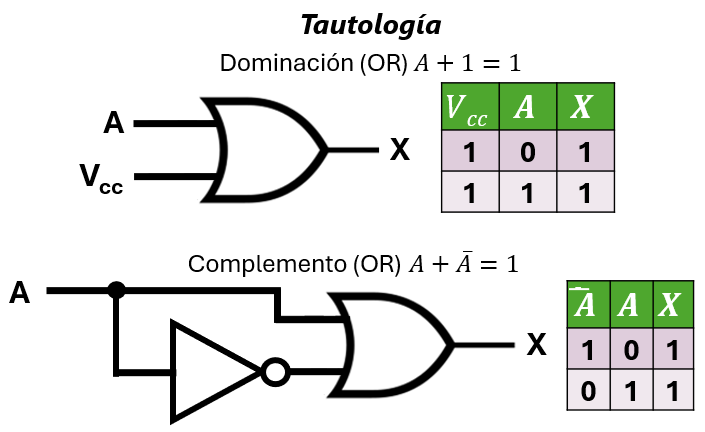
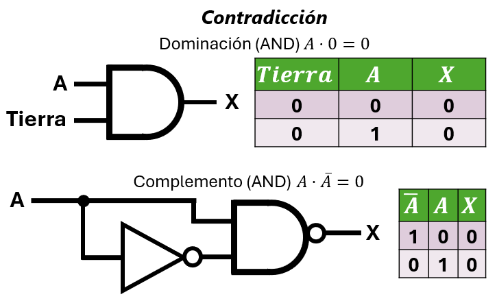
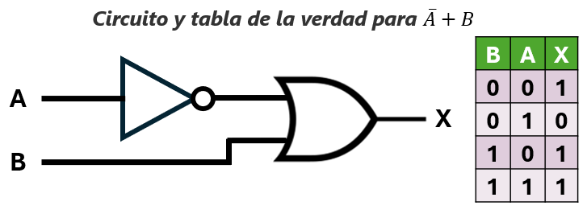
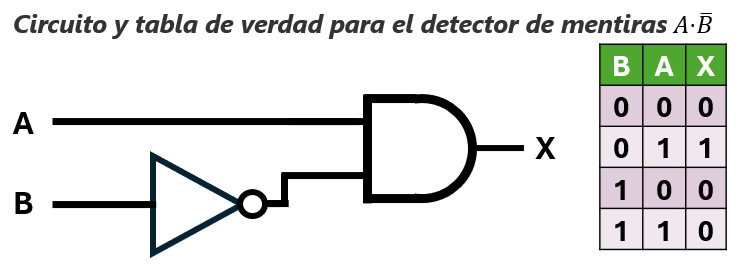
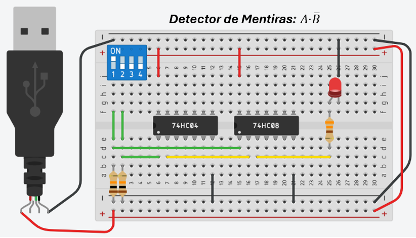

Unidad 3: Fundamentos de Cómputo - Lección 22
🤥 El Detector de Mentiras: Tautologías, Contradicciones e Implicación
En la lección anterior descubrimos que podemos traducir el pensamiento humano a circuitos eléctricos gracias al Isomorfismo. Hoy pondremos a prueba ese poder con la estructura mental más importante en ingeniería, matemáticas y leyes: El Pensamiento Condicional.
Las frases del tipo "Si haces esto, entonces pasa aquello" son sagradas. Hoy vamos a analizar cómo se comporta la lógica frente a las promesas humanas. Construiremos un circuito capaz de juzgar matemáticamente si un acuerdo se cumplió o si alguien acaba de mentir. ¡Bienvenidos al estrado judicial de la electrónica!
1. Verdades y Mentiras Eternas
Antes de juzgar una promesa, debemos entender los extremos absolutos de la lógica: expresiones que siempre dan el mismo resultado, sin importar lo que pase en el mundo exterior.
🔁 Siempre 1: Tautologías
Una tautología es una afirmación que es siempre verdadera por pura lógica. Su circuito dará 1 (5V) en cualquier situación, ¡incluso si desconectas los sensores!
| Expresión | Regla | Ejemplo Cotidiano |
|---|---|---|
| \(A + 1 = 1\) | Dominación (OR) | "Si traes el ticket (A) O si eres el dueño del cine (1 constante), entras". Al ser el dueño, siempre entras, sin importar el ticket. |
| \(A + \bar{A} = 1\) | Complemento (OR) | "O llueve (\(A\)) O no llueve (\(\bar{A}\))". No hay una tercera opción. La frase completa siempre es cierta. |
💡 En hardware (dos formas de obtener siempre 1):
- Dominación (OR): Conecta una de las entradas de la compuerta OR directamente a Vcc (+5 V) y la otra entrada a la señal \(A\). La salida quedará bloqueada en 1 para siempre, sin importar el valor de \(A\).
- Complemento (OR): Conecta la señal \(A\) a una entrada de la compuerta OR y la misma señal \(A\) a un inversor (NOT); la salida del inversor (\(\bar{A}\)) se conecta a la segunda entrada de la OR. La salida también será siempre 1.
Ambos circuitos producen una tautología (siempre 1) y se muestran en la figura siguiente.

Fig. 1: En la parte superior, la Dominación (OR) \(A + 1 = 1\); en el inferior, el Complemento (OR) \(A + \bar{A} = 1\). Ambos circuitos producen una salida siempre en 1.
👻 El Fantasma en la Tautología (Glitch)
En el papel matemático, el circuito \(A + \bar{A}\) siempre da 1. Pero en el mundo físico de la electrónica... ¡puede mentir por una fracción de segundo!
Recordemos la Lección 19: las compuertas tienen un Retardo de Propagación. En nuestro circuito de tautología, la señal \(A\) llega directamente a la compuerta OR. Sin embargo, la señal \(\bar{A}\) tarda unos nanosegundos extra porque primero debe "cruzar" el inversor (NOT).
Si cambias el interruptor de 1 a 0, durante esos minúsculos nanosegundos de desfase, la compuerta OR podría recibir dos ceros al mismo tiempo, provocando que la salida caiga a 0 por un instante antes de volver a 1. A esto se le llama un Riesgo Lógico (Logic Hazard) o Glitch. ¡El buen ingeniero sabe que las matemáticas son perfectas, pero los electrones toman tiempo en viajar!
⏱️ El Buffer: El "Reloj de Arena" del Ingeniero
Mencionamos que los Glitches ocurren porque una señal llega más tarde que otra. ¿Cómo lo arreglan los profesionales? Usando el chip 7407 (Buffer).
Si la señal A llega "muy rápido" a una compuerta y causa un error, el ingeniero inserta un Buffer en su camino. Como el Buffer no cambia la lógica (entra 1, sale 1), su única función real aquí es añadir un retraso intencional para que A espere a sus compañeras y todas lleguen a la meta al mismo tiempo.
Dato de Laboratorio: En los planos verás el símbolo del triángulo (IEC) que estudiamos en la Lección 18. Es el componente que "hace tiempo" para salvar la estabilidad del sistema.
⭕ Siempre 0: Contradicciones
Una contradicción es siempre falsa. Su circuito está condenado a dar 0 (GND) perpetuamente.
| Expresión | Regla | Ejemplo Cotidiano |
|---|---|---|
| \(A \cdot 0 = 0\) | Dominación (AND) | "Si estudias (\(A\)) Y la gravedad deja de existir (0), apruebas". Como la gravedad siempre existe, la condición total jamás se cumplirá. |
| \(A \cdot \bar{A} = 0\) | Complemento (AND) | "Está lloviendo Y no está lloviendo al mismo tiempo". ¡Absurdo! Siempre es falso. |
💡 En hardware (dos formas de obtener siempre 0):
- Dominación (AND): Conecta una de las entradas de la compuerta AND a GND (0 V) y la otra entrada a la señal \(A\). La salida quedará bloqueada en 0 para siempre.
- Complemento (AND): Conecta la señal \(A\) a una entrada de la compuerta AND y la misma señal \(A\) a un inversor (NOT); la salida del inversor (\(\bar{A}\)) se conecta a la segunda entrada de la AND. La salida también será siempre 0.

Fig. 2: En la parte superior, la Dominación (AND) \(A \cdot 0 = 0\); en el inferior, el Complemento (AND) \(A \cdot \bar{A} = 0\). Ambos circuitos producen una salida siempre en 0.
🔗 Conexión Matemática: Estas cuatro expresiones son pilares del álgebra de Boole. En la Lección 24 volveremos a la expresión \(A \cdot \bar{A} = 0\) para demostrar matemáticamente algo asombroso: ¡el opuesto de una señal es único en todo el universo!
🍎 Rincón del Docente: La "Lámpara Rota"
Para un estudiante de secundaria, las tautologías y contradicciones suenan a trabalenguas filosóficos. Tu trabajo es convertirlas en un problema físico que puedan tocar.
La Dinámica de la "Lámpara Rota"
Diles a tus alumnos: "Ayer compré una lámpara mágica. Le conecté un interruptor y, sin importar cuántas veces lo subiera o lo bajara, la lámpara JAMÁS se apagó. ¿Me estafaron?"
- Pídeles que armen el circuito \(A + \bar{A}\) en Tinkercad (Una entrada conectada a una compuerta OR, y la misma entrada pasando por un inversor hacia la otra pata de la OR).
- Pon un LED a la salida y diles: "Muevan el interruptor \(A\) todas las veces que quieran".
- El Asombro: Verán que el LED se queda prendido eternamente (Tautología). No es magia ni una estafa; es álgebra de Boole física.
- El Remate: Haz lo mismo cambiando la OR por una AND (\(A \cdot \bar{A}\)). El LED nunca encenderá (Contradicción). Diles: "Acaban de construir la lámpara más inútil del mundo, pero la lección matemática más valiosa".
2. La Implicación (\(A \rightarrow B\)): Evaluando Promesas
No existe un chip llamado "Implicador" en la ferretería, pero podemos construirlo. Para entenderlo, usemos el clásico ejemplo de la Promesa del Político:
Como ciudadanos (y como ingenieros), nuestro trabajo es juzgar si el político dijo la verdad (1) o si mintió (0). Analicemos los 4 escenarios posibles:
| Entrada (La Realidad) | Salida (El Veredicto: \(A \rightarrow B\)) | ||
|---|---|---|---|
| A (Ganó) | B (Bajó Impuestos) | Juicio de Verdad | Análisis del Ciudadano |
| 1 (Sí) | 1 (Sí) | 1 (Verdad) | Prometió y cumplió. ¡Es un político honesto! |
| 1 (Sí) | 0 (No) | 0 (Falso) | ¡MINTIÓ! Ganó, pero no cumplió su parte del trato. |
| 0 (No) | 1 (Sí) | 1 (Verdad) | No ganó, pero igual bajó los impuestos. (No rompió su promesa porque no estaba obligado). |
| 0 (No) | 0 (No) | 1 (Verdad) | No ganó, y no bajó los impuestos. (Tampoco rompió su promesa, porque la condición de ganar nunca ocurrió). |
🧠 El choque mental: La "Verdad Vacua"
Observa las dos últimas filas de la tabla (cuando el político NO gana, \(A=0\). El resultado del juicio es 1 (Verdad), ¡incluso si sube los impuestos!
Muchos estudiantes se confunden aquí: "¿Por qué es 'Verdadero' si no bajó los impuestos?". En lógica, a esto se le llama Verdad Vacua (o verdad por defecto). La regla de la implicación dice que solo podemos juzgarte como "Mentiroso" si se dan las condiciones para exigirte la promesa. Si la condición \(A=1\) nunca ocurrió, el contrato queda anulado, por lo que es imposible que lo hayas roto. Al no haber mentira, la lógica asume "Verdad" por defecto.
🧠 Tautología: la equivalencia lógica también es una verdad eterna
Decimos que dos expresiones lógicas son equivalentes (\(\equiv\)) si producen exactamente el mismo resultado para todas las combinaciones posibles de entrada. Esta equivalencia en sí misma es una tautología: una verdad absoluta e incuestionable en nuestro universo digital.
Verificaremos esto con la tabla de verdad, que compara la columna del Veredicto (\(A \rightarrow B\)) y la columna de la ecuación matemática (\(\bar{A} + B\)) encontrando que son idénticas en todas sus filas. Esta coincidencia perfecta nos da el permiso matemático para reemplazar la "promesa" abstracta por cables y chips físicos sin cambiar el comportamiento del circuito.
📐 Demostración de la equivalencia
Para confirmar que la implicación \(A \rightarrow B\) es idéntica a la expresión \(\bar{A} + B\), podemos usar una tabla de verdad que compare ambas columnas paso a paso:
| B | A | \(A \rightarrow B\) | \(\bar{A}\) | \(\bar{A} + B\) | ¿Son Equivalentes? \((A \rightarrow B) \equiv (\bar{A} + B)\) |
|---|---|---|---|---|---|
| 0 | 0 | 1 | 1 | 1 | ¡Sí! (1 = 1) |
| 0 | 1 | 0 | 0 | 0 | ¡Sí! (0 = 0) |
| 1 | 0 | 1 | 1 | 1 | ¡Sí! (1 = 1) |
| 1 | 1 | 1 | 0 | 1 | ¡Sí! (1 = 1) |
Al confirmar que ambas columnas principales son iguales fila por fila, demostramos que \(A \rightarrow B \equiv \bar{A} + B\). Esta es la belleza del álgebra de Boole: convertir un problema filosófico en una ecuación que podemos soldar en una placa.
Observa que las columnas de \(A \rightarrow B\) y \(\bar{A} + B\) son idénticas en todos los casos posibles. Cuando dos expresiones lógicas arrojan exactamente la misma tabla de verdad, decimos que son Lógicamente Equivalentes (\(\equiv\)). Esta equivalencia inquebrantable es en sí misma una tautología: una verdad absoluta. Esto prueba matemáticamente que podemos construir cualquier circuito de implicación (una promesa condicional) reemplazándolo por algo que sí existe en la ferretería: un inversor seguido de una compuerta OR.
Demostración algebraica (opcional):
Partimos de la definición de implicación: \(A \rightarrow B \equiv \neg (A \land \neg B)\).
Esta definición, “A implica B” equivale a decir que no puede darse el caso en el que “A” sea verdadera y “B” falsa.
Aplicamos De Morgan: \(\neg (A \land \neg B) \equiv \neg A \lor \neg \neg B \equiv \neg A \lor B\).
Por lo tanto, \(A \rightarrow B \equiv \bar{A} + B\).
El Circuito que Evalúa la Verdad
Observa la tabla: la promesa es evaluada como verdadera en 3 de los 4 casos. La única forma de que el resultado sea FALSO (0) es si \(A=1\) y \(B=0\).
Si aplicas los Minterms de la Lección 15 a los unos (1) y simplificas, descubrirás que la ecuación matemática que describe esta tabla es:
Traducción lógica: "Para que mi declaración sea verdadera, O bien NO gano las elecciones (\(\bar{A}\)), O bien bajo los impuestos (\(B\))."

Fig. 3: Tabla de verdad y circuito esquemático de la función \(\bar{A} + B\), que implementa la implicación lógica \(A \rightarrow B\).
📐 Construyendo la Implicación en Silicio
Este es un ejemplo clásico de cómo el álgebra de Boole nos permite crear operaciones complejas usando herramientas básicas. Para armar un "Implicador" en tu protoboard, solo necesitas pasar la señal A por un inversor (chip 7404) y sumarla a la señal B usando una compuerta OR (chip 7432).

Fig. 4: Circuito físico de la implicación (\(A \rightarrow B = \bar{A} + B\)) implementado con un inversor (7404) y una compuerta OR (7432).
🚨 El "Detector de Mentiras" (La Alarma)
El circuito anterior (Fig. 4) evalúa si se dijo la Verdad. Pero en un sistema de seguridad, las cosas funcionan al revés: queremos que suene una sirena (1 lógico) únicamente cuando se detecte una Mentira (una promesa rota).
¿Cómo creamos la Alarma de Mentira? ¡Aplicando la magia de la Lección 14! Simplemente negamos la ecuación de la Verdad usando las Leyes de De Morgan:
Traducción: ¡La alarma solo suena (1) cuando el político SÍ ganó las elecciones (\(A\)) Y NO bajó los impuestos (\(\bar{B}\))!

Fig. 5: El esquema lógico del Detector de Mentiras (\(A \cdot \bar{B}\)). La tabla confirma que el único 1 ocurre cuando la promesa se rompe.
De la Lógica a la Protoboard

Fig. 6: Circuito físico del Detector de Mentiras (\(A \cdot \bar{B}\)). Observa cómo De Morgan mutó el circuito de la Fig. 4: el inversor cambió de la entrada A hacia la entrada B, y la compuerta OR (7432) se transformó en una AND (7408).
Esta compuerta AND (chip 7408), con un inversor (chip 7404) astutamente colocado en la condición B, es tu verdadero "Detector de Mentiras" en hardware.
🔬 Simulación Interactiva: El Estrado Judicial
Haz clic en los interruptores (A, B). El circuito de la izquierda evalúa la Verdad (\(\bar{A} + B\)). El circuito de la derecha es la Alarma de Mentiras (\(A \cdot \bar{B}\)). ¡Observa cómo actúan como complementos exactos!
3. Errores Comunes de la Lógica Humana
⚠️ Cuidado: Las Trampas del Lenguaje
Dada una implicación real \(A \rightarrow B\), los seres humanos solemos inventar tres variantes falsas en nuestra cabeza:
Ejemplo Base: “Si llueve (\(A\)), entonces el suelo se moja (\(B\)).” (Verdadero)
- ❌ Converse (\(B \rightarrow A\)): “Si el suelo está mojado, entonces llovió”.
(Falso: Pudo ser un aspersor o alguien lavando el piso). - ❌ Inverso (\(\bar{A} \rightarrow \bar{B}\)): “Si no llueve, entonces el suelo no se moja”.
(Falso: El aspersor lo puede mojar igual). - ✅ Contrarrecíproca (\(\bar{B} \rightarrow \bar{A}\)): “Si el suelo NO está mojado, entonces NO llovió”.
(¡Verdadero! Esta es la única deducción lógicamente perfecta y equivalente a la original).
⚠️ La implicación NO es simétrica
Muchos estudiantes cometen el error de pensar que “Si A entonces B” significa también “Si B entonces A”. Esto es una falacia.
Ejemplo: “Si un animal es un perro, entonces tiene cuatro patas”. De ahí no puedes deducir que “Si tiene cuatro patas, entonces es un perro” (¡podría ser un gato!).
Regla de oro: La implicación es una calle de un solo sentido. Para que sea válida en ambos sentidos, necesitas la Compuerta XNOR (Bicondicional).
🍎 Rincón del Docente: El Juicio del Político
Explicar por qué \(0 \rightarrow 1\) es "Verdadero" (Verdad Vacua) es el momento en el que el 80% de los estudiantes se rinden. No uses la tabla de verdad todavía; conviértelo en una obra de teatro.
Juego de Rol: "El Detector de Mentiras Humano"
Pon a un estudiante al frente (El Político) y dale un letrero que diga: "Si gano (A), les doy pizza (B)". El resto del salón es el Jurado.
- Caso 1 (\(1 \rightarrow 1\)): Diles: "Ganó las elecciones y trajo pizza. ¿Mintió?". El jurado gritará: "¡No, dijo la verdad (1)!".
- Caso 2 (\(1 \rightarrow 0\)): Diles: "Ganó, pero no trajo nada. ¿Mintió?". El jurado gritará indignado: "¡Sí, mentiroso (0)!".
- Caso Crítico (\(0 \rightarrow 1\)): Diles: "Perdió las elecciones (A=0)... pero de buena gente les trajo pizza (B=1). ¡Ojo a la pregunta! ¿Rompió su promesa original?". Deja que debatan. Guíalos a ver que la promesa era condicionada a ganar. Como no ganó, el contrato se anuló. ¡Es imposible llamarlo mentiroso! Por descarte lógico, la declaración sigue siendo válida (1).
✨ El Anclaje Final
Una vez que el salón acepte que "No mintió = Verdadero", saca la Tabla de Verdad. Recuérdales las falacias del Converse y el Inverso. Cuando vean que la ecuación de la alarma es \(\text{Mentira} = A \cdot \bar{B}\), lo entenderán de inmediato porque ellos mismos sintieron la indignación del Caso 2 en el juego de rol.
4. Isomorfismo: Conjuntos y Código
🔗 En Teoría de Conjuntos
Recordando el isomorfismo de la Lección 21, la implicación tiene su equivalente exacto en los diagramas de Venn:
Interpretación: “Si es un cuadrado, entonces tiene cuatro lados” equivale al conjunto de “Todas las figuras que NO son cuadrados, UNIDO a todas las figuras que tienen cuatro lados”.
💻 En Programación (C++ / Arduino)
Cuando escribes una sentencia condicional if en un programa, estás ordenando al procesador que evalúe una implicación:
if (ganaElecciones == true) {
bajarImpuestos = true;
}A nivel microscópico, el compilador traduce esa estructura abstracta de software a compuertas físicas (NOT y OR) dentro de la CPU para procesarla.
🔁 Adelanto: El Bicondicional (Equivalencia)
Cuando la promesa es de doble vía, es decir, “si y solo si”, se utiliza el bicondicional (\(A \leftrightarrow B\)).
Se construye uniendo dos implicaciones con una compuerta AND:
¿Te resulta familiar el símbolo \(\leftrightarrow\)? ¡Es la mismísima Compuerta XNOR que vimos en la Lección 18! Es el "Juez de Igualdad", verdadero solo cuando ambas partes cumplen su parte del trato o ambas se abstienen.
🎧 Podcast: Conversación entre Expertos
Dos docentes analizan cómo la implicación lógica puede ser implementada con compuertas NOT y OR, discuten la diferencia crucial entre el "Juicio de Verdad" y la "Alarma de Mentiras" (usando De Morgan), y comparten estrategias para erradicar las falacias del "converse" y el "inverso" en el razonamiento de los estudiantes.
🪪 Tarjeta de Identidad del Prompt Ético
Usa esta guía para construir prompts que te ayuden a generar ejemplos de implicaciones lógicas en contextos reales de programación o robótica.
📝 Mi Fórmula de 4 Pasos:
💡 Ejemplo de Prompt:
"Comprendí que la implicación (\(A \rightarrow B\)) evalúa si una regla se cumplió (\(\bar{A} + B\)), pero para activar una alarma de incumplimiento usamos su negación (\(A \cdot \bar{B}\)). Quiero saber: si diseño el código para un robot que debe detenerse (B) si detecta el borde de la mesa (A), ¿cómo estructuro el circuito de alarma que pite si el sensor falla y el robot se cae? Explícame como si fuera a enseñárselo a mis estudiantes de robótica de grado 9°. Incluye un error lógico común que los estudiantes cometen al escribir sentencias 'If-Then' pensando que funcionan en ambas direcciones."
📋 Bitácora de Innovación (Mi Cuaderno)
Responde en tu cuaderno físico (o aquí) las siguientes reflexiones:
- La promesa rota: Escribe una regla de tu vida cotidiana en forma de implicación (\(A \rightarrow B\)). Por ejemplo, "Si estudio toda la noche, entonces aprobaré el examen". Analiza: ¿Qué sucede si no estudiaste pero igual aprobaste? ¿Rompiste la regla lógica?
- Diagnóstico inteligente: Describe una situación real donde usarías la contrarrecíproca (\(\bar{B} \rightarrow \bar{A}\)) para diagnosticar un problema técnico en tu casa sin tener que revisar la causa original.
- Diseño de Alarmas: Tu jefe te pide una alarma que suene (1) si "El cliente se lleva el producto (A) Y NO ha pagado en caja (B)". Diseña la ecuación booleana. ¿Te das cuenta de que acabas de aplicar De Morgan a una implicación?
🚀 Próximamente...
Has construido un circuito que juzga promesas individuales. Eres el juez implacable de dos variables (A y B).
Pero el mundo real no se mueve de a un bit por vez. ¿Qué pasa cuando la información viaja en "manadas"? Imagina que tienes 8 sensores de humo en un rascacielos y necesitas tomar una decisión de emergencia basada en el comportamiento colectivo.
En la próxima lección, daremos el gran salto al mundo de los Buses de Datos. Aprenderemos a usar los Cuantificadores Lógicos (∀, ∃) para diseñar circuitos masivos que respondan a preguntas como "¿TODOS los sensores están activos?" o "¿EXISTE al menos un fallo?". ¡Pasaremos de la lógica individual a la arquitectura de computadores!